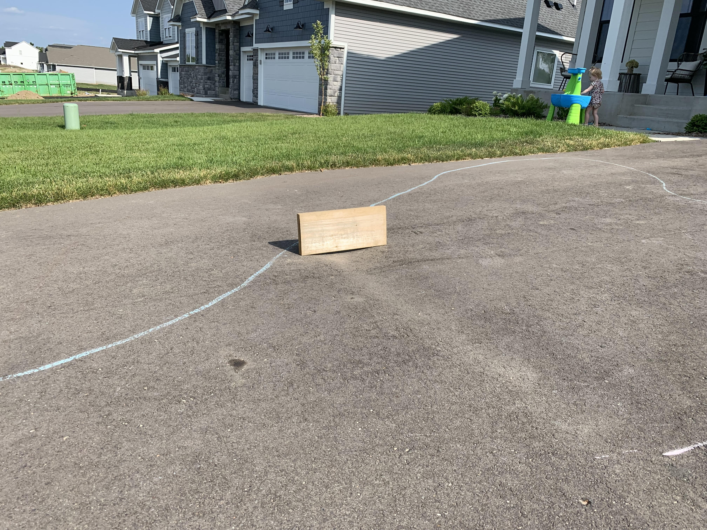

Bad Driveway | 2022 to 2023
I was debating whether to categorize this as a major or minor issue. Considering that a driveway replacement is thousands of dollars, I put it in the major category.
After closing on our house the driveway was not poured yet. Around one to two months after closing we got scheduled to have our driveway poured. Yay, how exciting! After it was poured I went outside and one of the workers immediately confronted me and said "this driveway packed bad and left a dip in the middle". I thought to myself, how bad can it be?
After waiting a week to drive on it we realized how bad it was - the dip was a narrow area that quickly dipped around 1 inch. It felt like an inverse speedbump every time we exited our garage - not to mention how annoying snowblowing or shoveling this area was during that winter.
We called the construction manager immediately after this was reported to us. He had the asphalt manager come meet with us - and the three of us determined that it was a bad pour and needs to be redone. However, the asphalt manager said it would be best to wait a year and let everything settle before redoing it.
This was where our mistake began - we never got it in writing that they will agree to redo this. We have text conversations back and forth with the construction manager stating such, but never signed any formal documents. After a year passed we contacted M/I and said "Hey, it's been a year - can we get our driveway replaced?"
M/I Homes quickly denied our request and said at most they would be willing to patch the dip as it does not exceed 3" and is within their spec. We challenged this decision, but in the end we were left off with a sense that they are doing us a favor by their willingness to even patch this at all.
